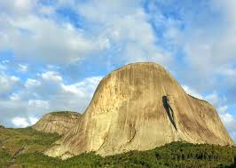
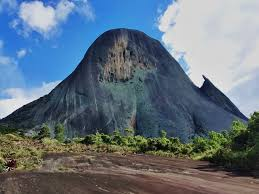
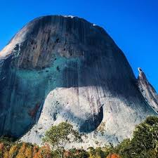

Parque Estadual da Pedra Azul
A Pedra Azul é uma das atrações naturais mais conhecidas do Espírito Santo. Localizada no município de Domingos Martins, a formação rochosa faz parte do Parque Estadual da Pedra Azul e atrai visitantes de todo o Brasil.
O nome "Pedra Azul" vem da mudança de tonalidade da rocha ao longo do dia. Dependendo da incidência da luz, ela pode apresentar tons azulados, esverdeados e até acinzentados.
A região possui clima ameno, belas paisagens, trilhas ecológicas e uma rica biodiversidade, tornando-se um importante destino turístico capixaba.
Curiosidades
- A Pedra Azul possui aproximadamente 1.822 metros de altitude.
- O parque abriga diversas espécies de animais e plantas da Mata Atlântica.
- A pedra muda de cor conforme a luz do sol.
- É um dos principais cartões-postais do Espírito Santo.
- O parque possui trilhas ecológicas e piscinas naturais.
Informações Gerais
- Localização: Domingos Martins - ES
- Altitude: 1.822 metros
- Bioma: Mata Atlântica
- Categoria: Parque Estadual
- Principal atração: Pedra Azul

